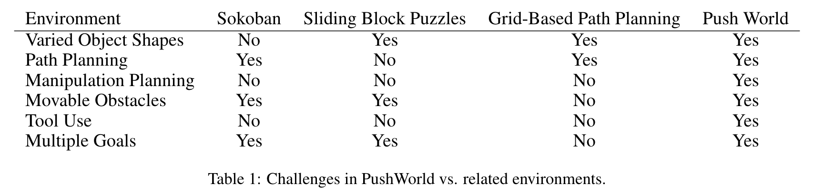

PushWorld is a novel grid-world environment designed to test planning and reasoning
with physical tools and movable obstacles. While recent advances in artificial intelligence have achieved human-level performance in environments like Starcraft and Go, many physical reasoning tasks remain challenging for computers. The PushWorld benchmark contains a collection of puzzles that emphasize this challenge while minimizing the complexity of physics.PushWorld is available as an OpenAI Gym environment and in PDDL format in Github. The environment is suitable for research in classical planning, reinforcement learning, combined task and motion planning, and cognitive science.
Play PushWorld
Select a Puzzle Difficulty
Level 1
Level 2
Level 3
Level 4
Level 1 Puzzles
Loading...
Level 2 Puzzles
Loading...
Level 3 Puzzles
Loading...
Level 4 Puzzles
Loading...
Puzzle name
Use the arrow keys to push the red shapes into their outlines. Use the
Undo
and
Reset
buttons above to retry a puzzle.
Solved!
PushWorld vs. Related Environments
Solving PushWorld puzzles requires many skills, including:
Path Planning: Finding a collision-free path to move an object from one position to another, considering walls and object shapes.
Manipulation Planning: Exploring alternative ways to push an object along a desired path. Some puzzles require the agent to preemptively position itself so that it can move from pushing in one direction to pushing in a different direction in the future.
Moving Obstacles: The agent must decide between finding a path around an obstacle or moving the obstacle out of the way. Some obstacles introduce choices in which freeing one path blocks another, and choices can be irreversible. Obstacles can also be "parasitic": once pushed against an object, the agent can never separate the obstacle from the object.
Using Tools: Sometimes to move an object into a desired position, the agent must use one or more objects as tools to indirectly push the target object: the agent pushes a tool object, which simultaneously pushes the target or another tool. In some puzzles the agent must assemble a tool by pushing multiple objects together.
Prioritizing Multiple Goals: Sometimes moving an object into its goal position may prevent achieving another goal. Puzzles may also require achieving multiple goals simultaneously by preemptively arranging objects and pushing them all at once.
Several existing environments have comparable physical dynamics: Sokoban, sliding block puzzles, and grid-based path planning. However, none of these environments require all of the skills above.

Evaluation: Classical Planners
Methods
Fast Forward is a seminal planning algorithm relying on a delete relaxation heuristic for efficient computation at a loss of accuracy.
Fast Downward precomputes domain transition graphs to efficiently estimate the cost of transitioning avariable to a desired value.
LAMA uses propositional formulas that must be satisfied as landmarks during planning (winner of IPC2008 sequential satisficing track).
Fast Downward Stone Soup (FDSS) is a portfolio of planners (winner of IPC 2018 satisficing track).
Best-First Width Search (BFWS) uses a heuristic that prioritizes exploring states with novel combinationsof variable values ( winner of IPC 2018 agile track).
Saarplan is another portfolio of planners (runner-upof IPC 2018 agile).